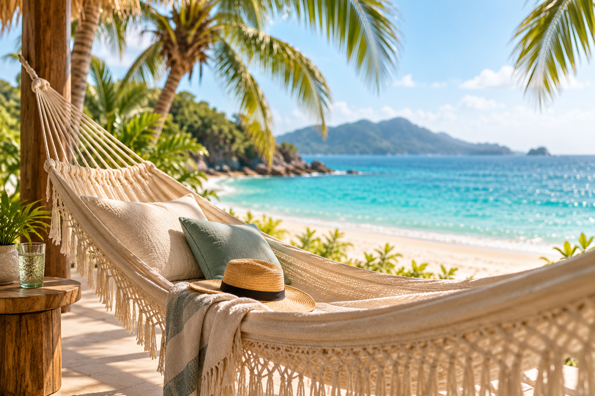
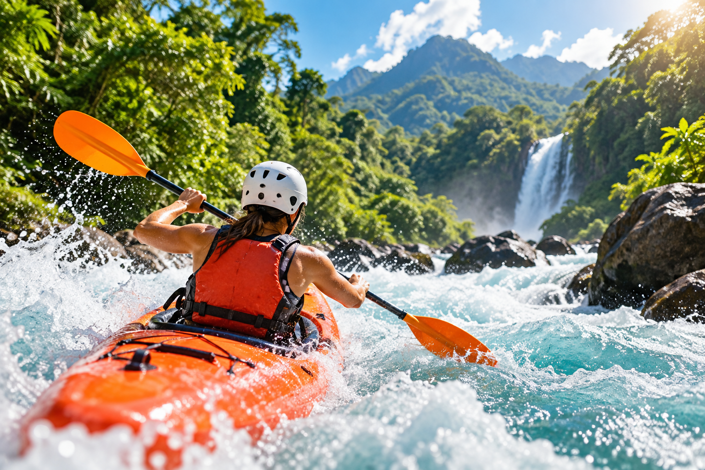
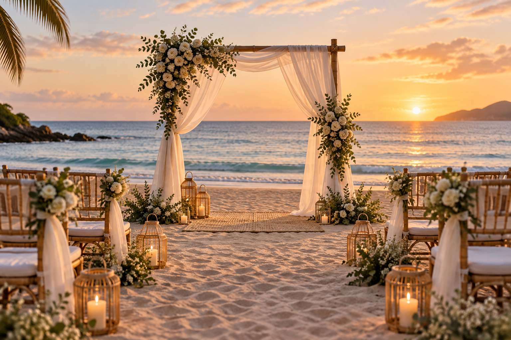

Descanso
Descanso
Si quieres bajar el ritmo, priorizamos comodidad, ubicación y el tipo de hospedaje.
Caribe
Resorts, escapadas en pareja, vacaciones en familia o unos días para desconectarte. Buscamos una opción que se sienta tan bien como se ve.
Ideas para empezar
Explora algunas ideas y, cuando una te haga ojitos, la aterrizamos según tus fechas y presupuesto.
Playa, resorts y escapadas con diferentes ritmos para pareja, familia o amigos.
Solicitar idea de viaje →Hospedaje, descanso y experiencias en la región con un enfoque relajado y elegante.
Quiero esta vibra →Vacaciones enfocadas en resort, mar turquesa y días para disfrutar sin complicarte.
Cotizar Punta Cana →Cuéntame qué buscas y revisamos otras opciones disponibles según tu tipo de viaje.
Explorar opciones →Tu estilo de viaje

Si quieres bajar el ritmo, priorizamos comodidad, ubicación y el tipo de hospedaje.

Si quieres actividades, revisamos cómo integrarlas sin saturar el itinerario.

Viajes en pareja, familia o grupo pueden requerir prioridades distintas.
Dime cuántas personas viajan y el presupuesto aproximado para empezar a buscar tu opción.
 Cotizar Caribe
Cotizar Caribe